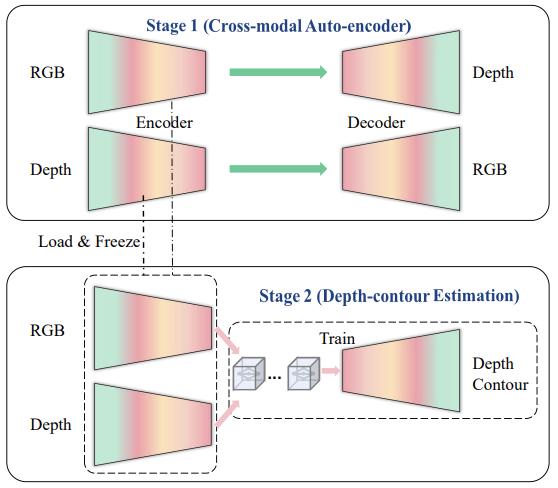
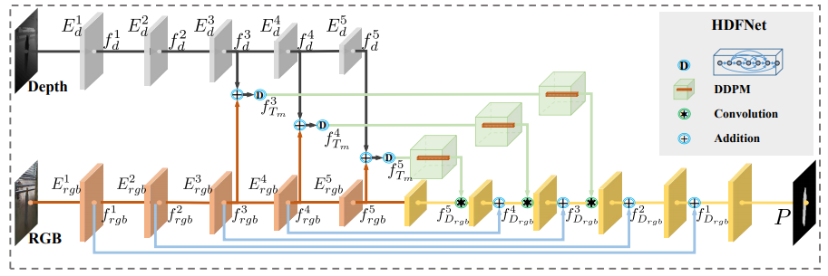
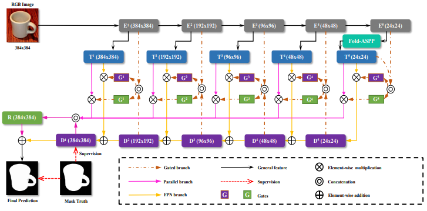
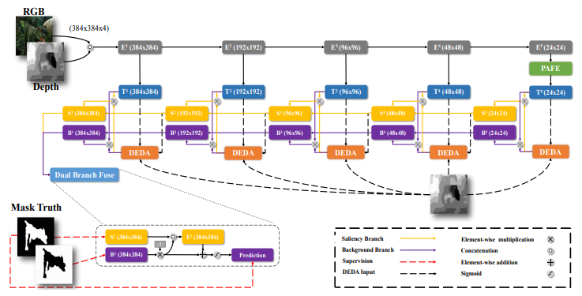
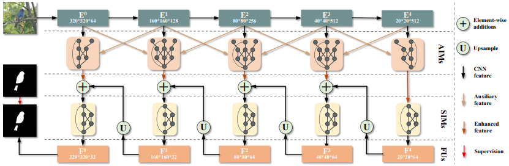

Publications

Multi-Source Fusion and Automatic Predictor Selection for Zero-Shot Video Object Segmentation
Xiaoqi Zhao, Youwei Pang, Jiaxing Yang, Lihe Zhang, Huchuan Lu
in ACMMM, 2021
[PAPER] [CODE]
Xiaoqi Zhao, Youwei Pang, Jiaxing Yang, Lihe Zhang, Huchuan Lu
in ACMMM, 2021
[PAPER] [CODE]

Self-Supervised Representation Learning for RGB-D Salient Object Detection
Xiaoqi Zhao, Youwei Pang, Lihe Zhang, Huchuan Lu, Xiang Ruan
in arXiv:2101.12482, 2021
[PAPER] [CODE]
Xiaoqi Zhao, Youwei Pang, Lihe Zhang, Huchuan Lu, Xiang Ruan
in arXiv:2101.12482, 2021
[PAPER] [CODE]
Existing CNNs-Based RGB-D Salient Object Detection (SOD) networks are all required to be pre-trained on the ImageNet to learn the hierarchy features which can help to provide a good initialization. However, the collection and annotation of large-scale datasets are time-consuming and expensive. In this paper, we utilize Self-Supervised Representation Learning (SSL) to design two pretext tasks: the cross-modal auto-encoder and the depth-contour estimation. Our pretext tasks require only a few and unlabeled RGB-D datasets to perform pre-training, which makes the network capture rich semantic contexts and reduce the gap between two modalities, thereby providing an effective initialization for the downstream task. In addition, for the inherent problem of cross-modal fusion in RGB-D SOD, we propose a consistency-difference aggregation (CDA) module that splits a single feature fusion into multi-path fusion to achieve an adequate perception of consistent and differential information. The CDA module is general and suitable for both cross-modal and cross-level feature fusion. Extensive experiments on six benchmark RGB-D SOD datasets, our model pre-trained on the RGB-D dataset (6,392 without any annotations) can perform favorably against most state-of-the-art RGB-D methods pre-trained on ImageNet (1,280,000 with image-level annotations).


The main purpose of RGB-D salient object detection (SOD) is how to better integrate and utilize cross-modal fusion information. In this paper, we explore these issues from a new perspective. We integrate the features of different modalities through densely connected structures and use their mixed features to generate dynamic filters with receptive fields of different sizes. In the end, we implement a kind of more flexible and efficient multi-scale cross-modal feature processing, i.e. dynamic dilated pyramid module. In order to make the predictions have sharper edges and consistent saliency regions, we design a hybrid enhanced loss function to further optimize the results. This loss function is also validated to be effective in the single-modal RGB SOD task. In terms of six metrics, the proposed method outperforms the existing twelve methods on eight challenging benchmark datasets. A large number of experiments verify the effectiveness of the proposed module and loss function.


Most salient object detection approaches use U-Net or feature pyramid networks (FPN) as their basic structures. These methods ignore two key problems when the encoder exchanges information with the decoder: one is the lack of interference control between them, the other is without considering the disparity of the contributions of different encoder blocks. In this work, we propose a simple gated network (GateNet) to solve both issues at once. With the help of multilevel gate units, the valuable context information from the encoder can be optimally transmitted to the decoder. We design a novel gated dual branch structure to build the cooperation among different levels of features and improve the discriminability of the whole network. Through the dual branch design, more details of the saliency map can be further restored. In addition, we adopt the atrous spatial pyramid pooling based on the proposed "Fold" operation (Fold-ASPP) to accurately localize salient objects of various scales. Extensive experiments on five challenging datasets demonstrate that the proposed model performs favorably against most state-of-the-art methods under different evaluation metrics.


Existing RGB-D salient object detection (SOD) approaches concentrate on the cross-modal fusion between the RGB stream and the depth stream. They do not deeply explore the effect of the depth map itself. In this work, we design a single stream network to directly use the depth map to guide early fusion and middle fusion between RGB and depth, which saves the feature encoder of the depth stream and achieves a lightweight and real-time model. We tactfully utilize depth information from two perspectives: (1) Overcoming the incompatibility problem caused by the great difference between modalities, we build a single stream encoder to achieve the early fusion, which can take full advantage of ImageNet pre-trained backbone model to extract rich and discriminative features. (2) We design a novel depth-enhanced dual attention module (DEDA) to efficiently provide the fore-/back-ground branches with the spatially filtered features, which enables the decoder to optimally perform the middle fusion. Besides, we put forward a pyramidally attended feature extraction module (PAFE) to accurately localize the objects of different scales. Extensive experiments demonstrate that the proposed model performs favorably against most state-of-the-art methods under different evaluation metrics. Furthermore, this model is 55.5\% lighter than the current lightest model and runs at a real-time speed of 32 FPS when processing a 384×384 image.


Deep-learning based salient object detection methods achieve great progress. However, the variable scale and unknown category of salient objects are great challenges all the time. These are closely related to the utilization of multi-level and multi-scale features. In this paper, we propose the aggregate interaction modules to integrate the features from adjacent levels, in which less noise is introduced because of only using small up-/down-sampling rates. To obtain more efficient multi-scale features from the integrated features, the self-interaction modules are embedded in each decoder unit. Besides, the class imbalance issue caused by the scale variation weakens the effect of the binary cross entropy loss and results in the spatial inconsistency of the predictions. Therefore, we exploit the consistency-enhanced loss to highlight the fore-/back-ground difference and preserve the intra-class consistency. Experimental results on five benchmark datasets demonstrate that the proposed method without any post-processing performs favorably against 23 state-of-the-art approaches. The source code will be publicly available at this link.